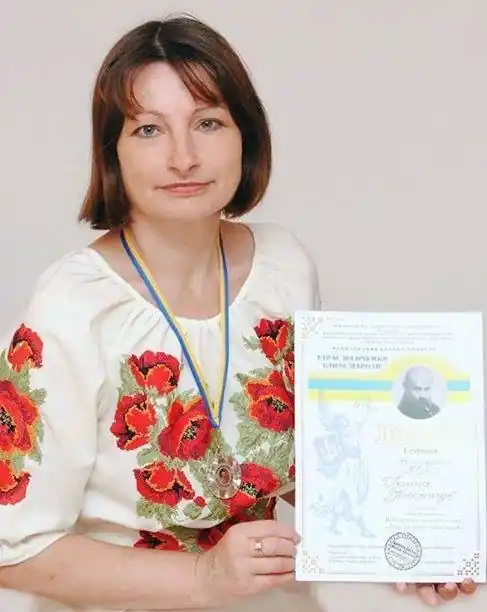

Ірина Олександрівна Небеленчук – кандидат педагогічних наук, викладач комунального закладу "Кіровоградський обласний інститут післядипломної педагогічної освіти імені Василя Сухомлинського", письменниця, перекладач, громадський діяч.
Ірина Небеленчук народилася в селищі Новгородці Кіровоградської області. Закінчила філологічний факультет Кіровоградського державного педагогічного університету ім. О. С. Пушкіна. У 2011 році захистила дисертацію "Діалогові технології навчання учнів 5-9 класів" на здобуття наукового ступеня кандидата педагогічних наук.
Автор понад 200 наукових праць з методики викладання літератури, з-поміж яких 23 посібники. Дослідниця творчості сучасних письменників (С. Висєканцев, М. Митровка, Ліна Ланська, Т. Кльокта, Г. Брич, Г. Онацька, В. Власюк, В. Савон, М. Чевелюк, В. Савчук, В. Мошуренко, Т. Яровицина та інші). Відгуки, рецензії, теоретико-практичні матеріали, що спрямовані на розгляд поетичного доробку сучасних поетів, розгляду й аналізу їхніх творів, розкриття мотивів, тем, образів, символів поезії, з᾿ясування поетичного стилю були укладені в науково-практичний посібник "Особливості поетичного стилю та мотиви творчості сучасних поетів". Учасник і переможець Всеукраїнських і Міжнародних освітянських, мистецьких і літературних фестивалів, конкурсів, проєктів, зокрема "Народжені вільними", "Наша мова калинова", "Він, Вона і війна", "Огні горять", "Україна – шлях до Незалежності"; Всеукраїнського Благодійного Марафону "Подаруй серце солдату" і концертної програми в рамках Благодійного Марафону, Всеукраїнського народного мистецько-історичного фестивалю поезії та пісні "Українські передзвони", Всеукраїнського літературно-мистецького фестивалю "Театр слова", І Всеукраїнського поетичного стартапу "Дотиком душі", Всеукраїнського військово-патріотичного заходу до Дня захисника України та концертної програми. Дипломант ІІ Міжнародного проєкту-конкурсу "Тарас Шевченко єднає народи". Диплом І ступеня в номінації "Мій Шевченко" в категорії "Шевченко літературний". Неодноразовий учасник і переможець конкурсів педагогічної майстерності "Вчитель року", "Я іду на урок", "Авторський урок", "Скарбниця майстерності", "Щоб його духом запліднити освітянську ниву" (щорічний науково-методичний конкурс, присвячений дню народження Т. Г. Шевченка), "Науковці – вчителям" тощо. Співорганізатор декількох Міжнародних освітянських проєктів, у яких бере участь інститут, мистецьких проєктів. Поезії надруковані в районній та обласній пресі, на поетичному сайті "Проспект Піднесення", журналах "Українська література в загальноосвітній школі" "Всесвітня література в навчальних закладах України", у колективних збірках "Він, Вона і війна, "Огні горять", у літературних альманахах (усього 23 альманахи), в авторських посібниках "Зарубіжна література. 5 клас", "Діалогові технології навчання світової літератури". Автор восьми поетичних збірок "Мелодія душі моєї" (2010), "Крила надії" (2010), "Осенние мотивы" (2010), "Пори року" (2014), "Берег любові" (2016), "Життя поділене навпіл" (2017), "Купина неопалима" (2019), "Джерело Іппокрени" (2020). Автор перекладів віршів Сергія Висєканцева й укладач поетичної збірки "Символ нашей любви" (2017). Співавтор колективних збірок і альманахів (усього 23). Співпраця з композиторами, музикантами, виконавцями Володимиром Ринденком, В᾿ячеславом Чорним, Миколою Ведмедерею, В᾿ячеславом Купрієнком, Анастасією Ковергою стала результатом створення декількох пісень, зокрема "А знаєш любий…", "Дорога до мами", "Стежина до хати", "Ти прийди", "Цвіт щастя", "Дощик", "А дощик плаче", "Україно моя!", "Відведи мене в ліс", "Остання молитва", "Самотність" та інші. Член літературного об'єднання "Cвіточ" в Новгородківському районі Кіровоградської області, член Кіровоградського обласного літературно-творчого об᾿єднання "Парус", член Спілки слов᾿янських письменників України. Літературний редактор значної низки збірок сучасних письменників, укладач збірок і автор передмов до них (усього 13 збірок).